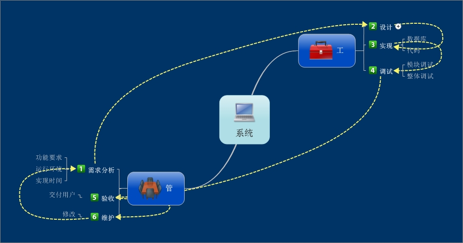
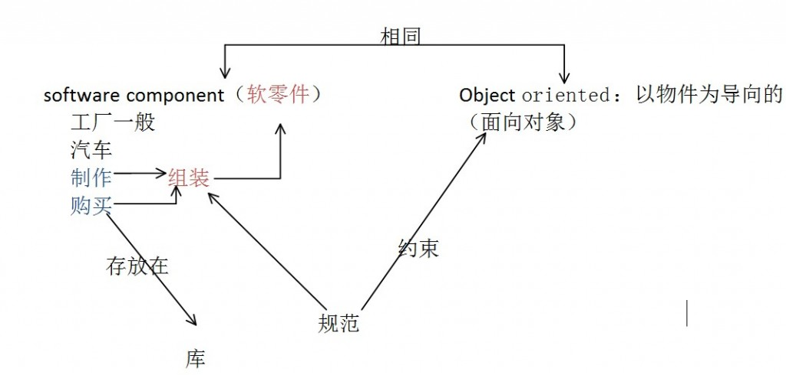

机房收费系统的代码工作初步完成，在完成整个系统的时候感觉以前学的东西都有影射在里面，从信息资源管理，从系统管理，从刚看的软件工程思想，等等吧，这是对已经学过知识的一次小小的联系和完善，以此为节点，好似织了一张网！

从自考的角度看这是一种信息转化成资源的形式！这里的管和工的意思是这样的，管的意思是这一块偏向于人的管理，包括个人和团队的管理，工的含义是这一块偏向于技术型，当然仅仅是偏向，整个系统的完成需要各个方面的全力合作，人与电脑的密切联系是不能分开的！
从系统管理的角度，这是一次小小的尝试吧！他不仅仅让我看到完成系统的不易，也看到另外一片蓝天就是工程管理！没有看软工之前我觉得它是神秘不可接触的，但是通过这几天的总的浏览了一遍《软件工程的思想》，让我感到软工就是系统的管理！从管理的，工程的更高角度看待问题，抽象成一个工程！

我很佩服前人的奇思妙想！怎么会有电脑，怎么会有系统，怎么会让我敲几个代码就实现什么功能！这一切的背后有着一个革命的含义，就是信息革命！它悄无声息，却比任何时候改变世界的速度都要猛烈！也许是一个小小技术的革新或者是一项 不算宏大的发明创造，在信息时代的今天，它会在几个小时，甚至几分钟内，变成全球通用！
我很庆幸我生活在这样的一个时代，一个处在“革命”风头浪尖的时代 ，这个时代一切皆有可能，第一台图形化操作系统的诞生改变了我们对电脑的看法，改变了我们的生活方式，第一步能上网的手机，让这个世界时刻联通在一起，第一台平板电脑，让我们进入不一样的生活，我们的今天已经离不开信息技术！这是全球顶级的资源，也是一次“革命式”的考验！